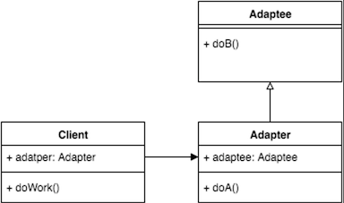

Adapter Pattern by Juicyroach
Posted on Apr 10, 2016 at 03:00 PM

● 目地 : 將不同類別結合使用
● 使用時機 : 需有將自己的程式碼與與不同類型的類別整合之介面
● 想法 : 新增一個類別能轉換將想使用的部分轉接成我們能使用的部分
● UML :
● 程式與解說 :
首先要先有被轉接的物件，這邊以一個企鵝類別為例
public class Penguins {
public void walk(){
System.out.println("Peguins walk");
}
public void gobble(){
System.out.println("Peguins gobble");
}
}
接著撰寫我們希望轉接的類別，此類別需繼承被轉接之類別，並撰寫希望被己方程式使用的方法
public class PenguinsAdapter extends Penguins {
private Penguins penguins;
public PenguinsAdapter() {
this.penguins = new Penguins();
}
public void adapterWalk() {
this.penguins.walk();
}
public void adapterGobble() {
this.penguins.gobble();
}
}
最後Client即可使用adapt來控制被轉接之物件
public class Client {
public static void main(String[] args) {
PenguinsAdapter adapter = new PenguinsAdapter();
adapter.walk();
adapter.gobble();
}
}
未來若對於被轉接者有更多的需求，即可在轉接器上面撰寫即可，不必實際修改到被轉接者